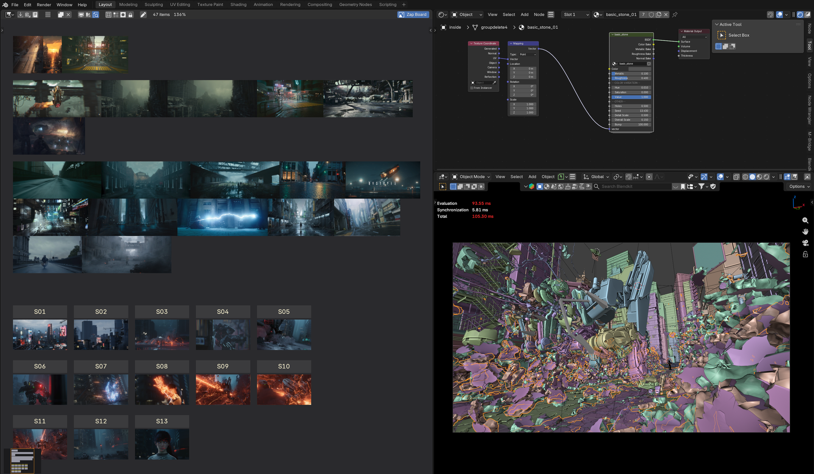
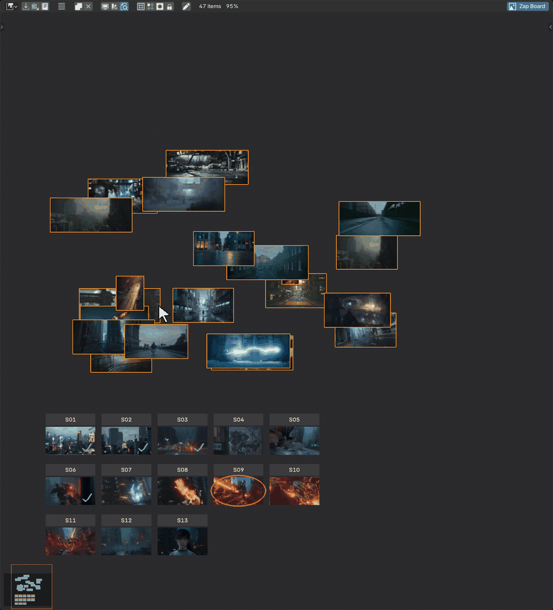
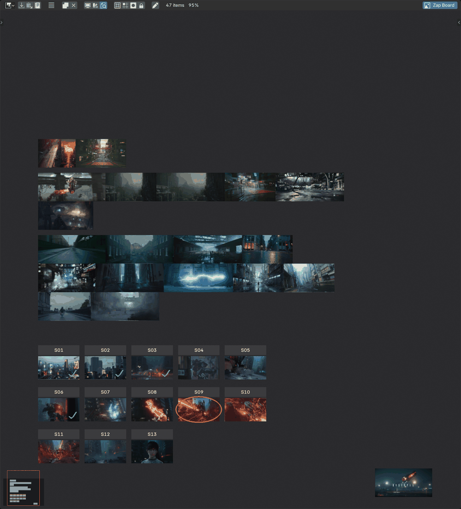
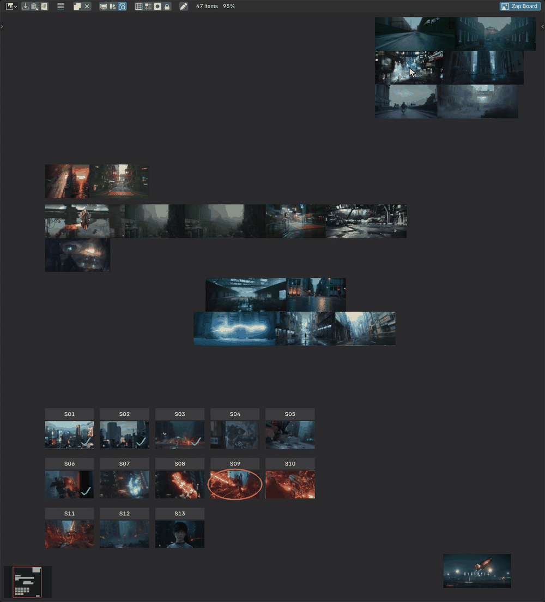
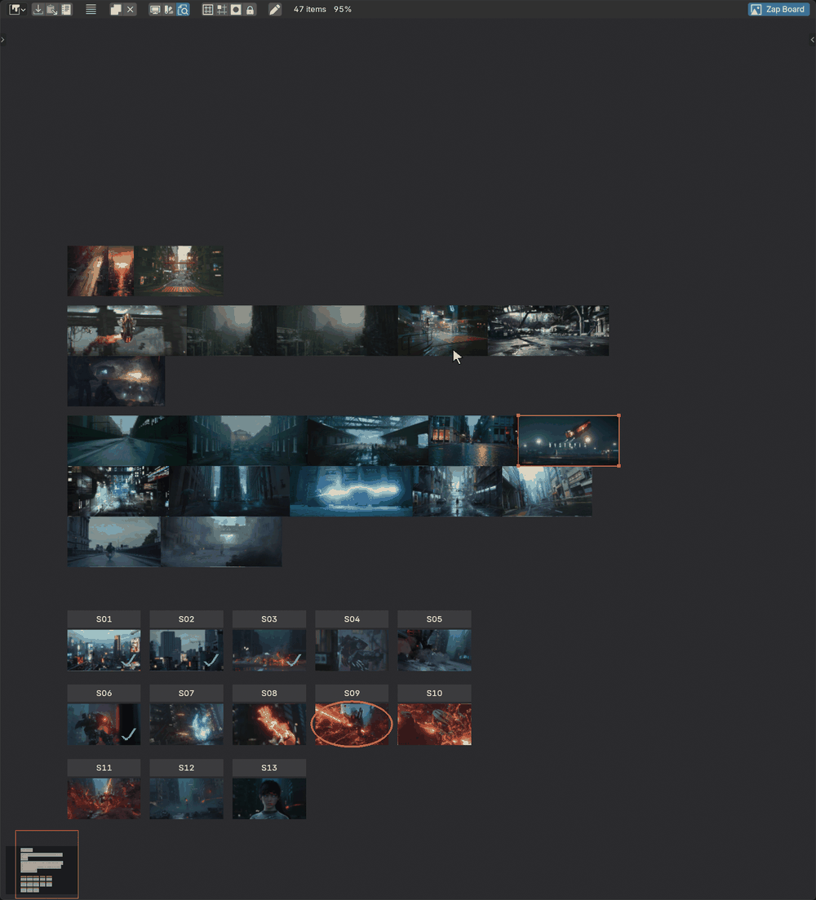
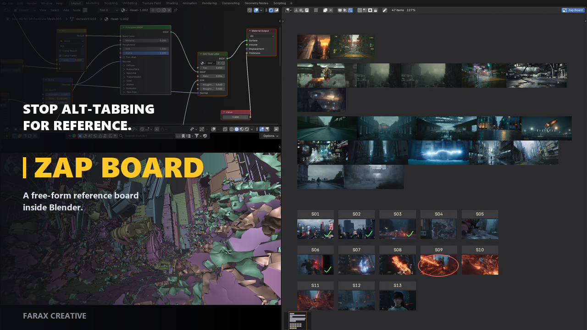

Turn any Image Editor into a free-form board. Arrange your references, move them, mark them up — and it saves with your file. No second app, nothing added to your 3D scene.

Three things you do to a reference board, all of them by hand, none of them leaving Blender.

Ctrl+P packs everything with no
overlaps. Select first and it only tidies the selection.

Drag a box to select, then move the whole set at once. No modifier key needed to keep a selection together.

Pick a colour and draw straight on the board. Ticks, circles, arrows — whatever marks up a reference.
The board is a Blender editor, so it sits in your layout like any other. You stop alt-tabbing to look at a photo.
Layout, notes and pen marks live in the .blend.
Close Blender, reopen the file, and the board is where you left it.
Nothing in the outliner, nothing in the viewport, nothing in your render. Uninstall it and your file still opens fine.
Real board, real project. No sped-up footage.

Cards move freely. Nothing snaps unless you ask it to.

Notes are cards too — here they label shots S01 to S13, ticked off as they finish.
Tested on 4.5, 5.0, 5.1 and 5.2.
One zip. Nothing to install alongside it.
The add-on never talks to anything.
Run against real Blender, every version.
Windows, macOS and Linux. Two convenience commands — Paste Image and Reveal File — are Windows only, because they hand off to a Windows tool. Everything that makes the board a board works everywhere; use Import Images… or drag and drop instead of pasting.
GPL-3.0-or-later. Full instructions in the user manual (English, 한국어, 日本語, Português, Español).
No. The board lives in its own data, not in your scene. Nothing is added to the outliner, nothing appears in your render, and your viewport is untouched.
Only if you pack them first. Blender stores images as paths, so a .blend on its own arrives with empty cards. Press Pack Images for Sharing in the sidebar before sending. That embeds the images and makes the file larger by roughly the size of the images.
No. The file opens normally without it — they simply see an ordinary Image Editor. If they edit and send it back, the board comes through intact.
Your .blend still opens and works exactly as before. The board data simply stops being displayed. Reinstall and it comes back.
No. The board draws only in the editor showing it, and the images are the same ones Blender already handles. A board of twenty large references adds no measurable cost to the viewport or to rendering.
There is no fixed limit. Memory is the practical one — the images are loaded the way any Blender image is.
One board per .blend file. Board mode is per editor, so you can show it in one Image Editor while another stays an ordinary image viewer.
Everything you see here is free and stays that way. A Pro tier may follow later for heavier workflows, but it will add to this — never fence off something you already have.
There is a Report a Bug button in the board sidebar and in Preferences → Add-ons → Zap Board. It opens the report form with your versions already filled in.
Free. Blender 4.5 LTS or newer.